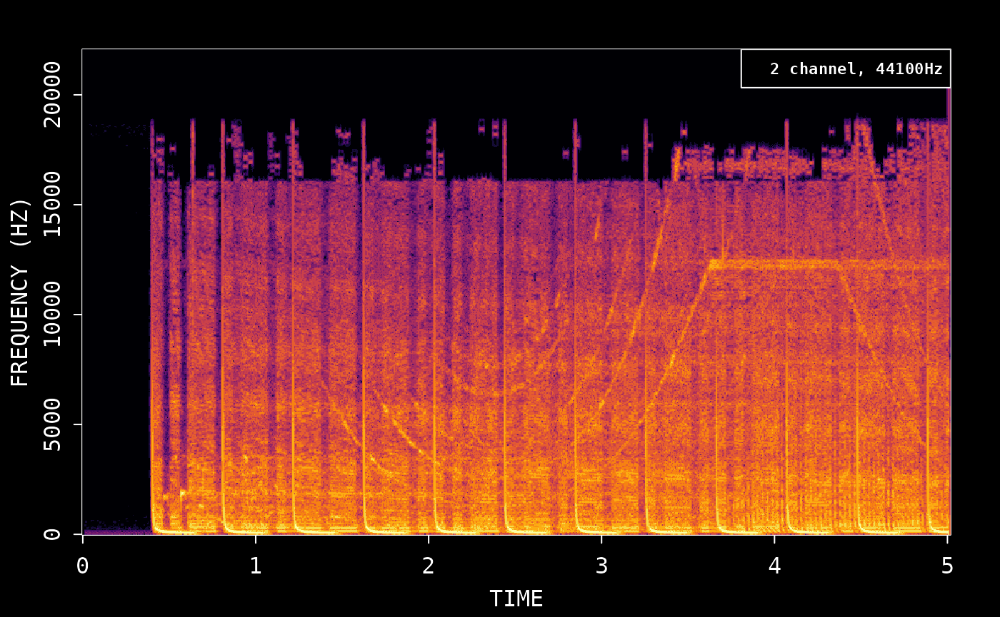
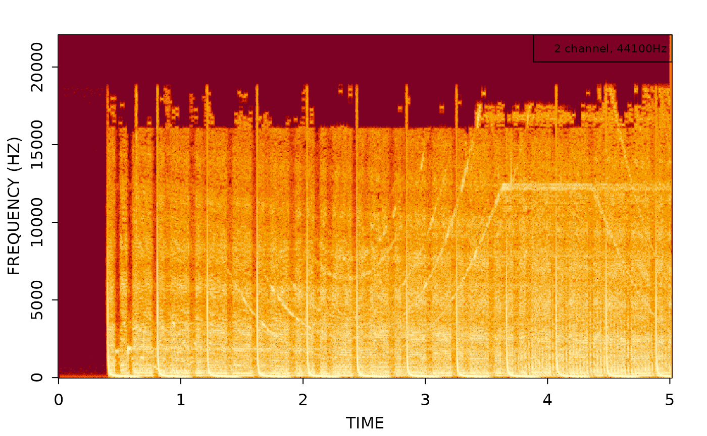
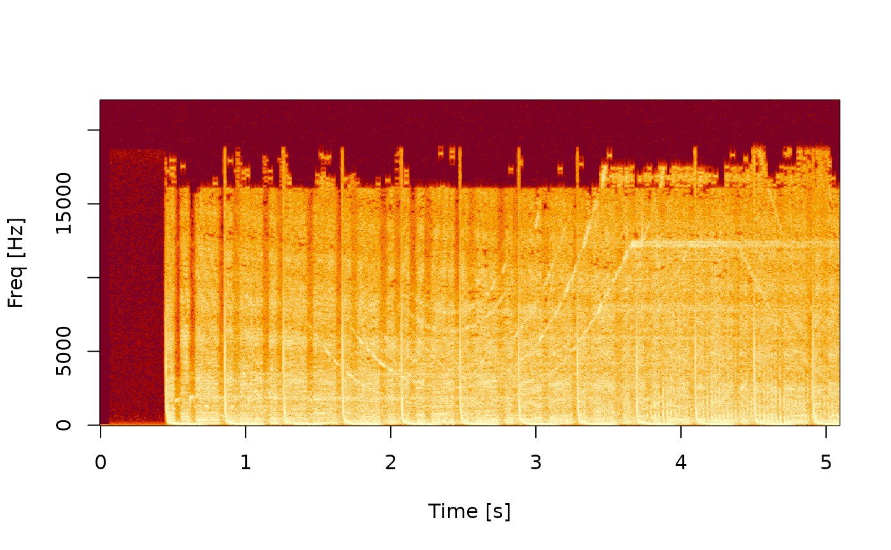
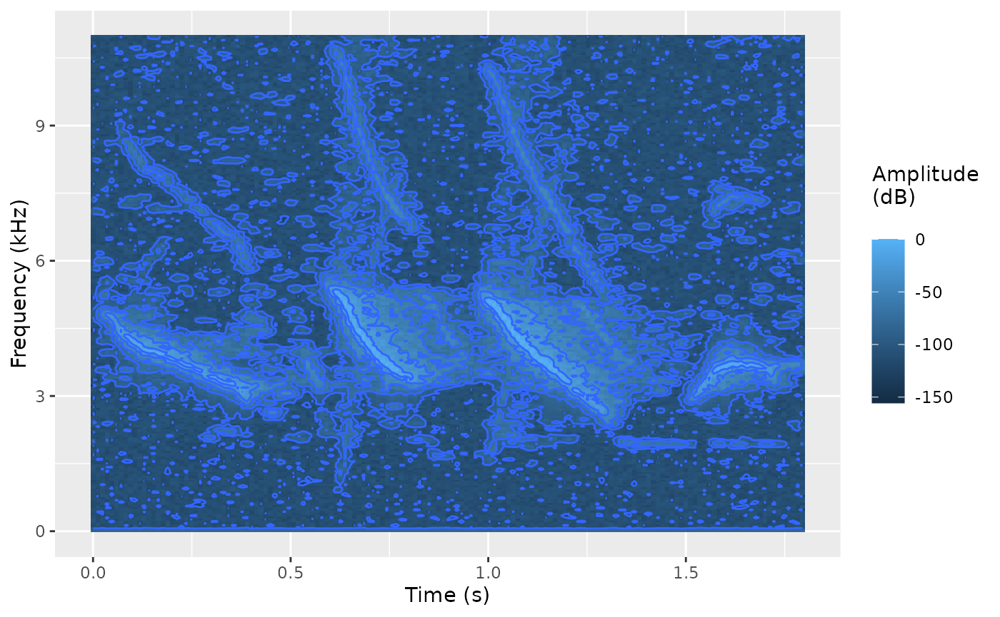
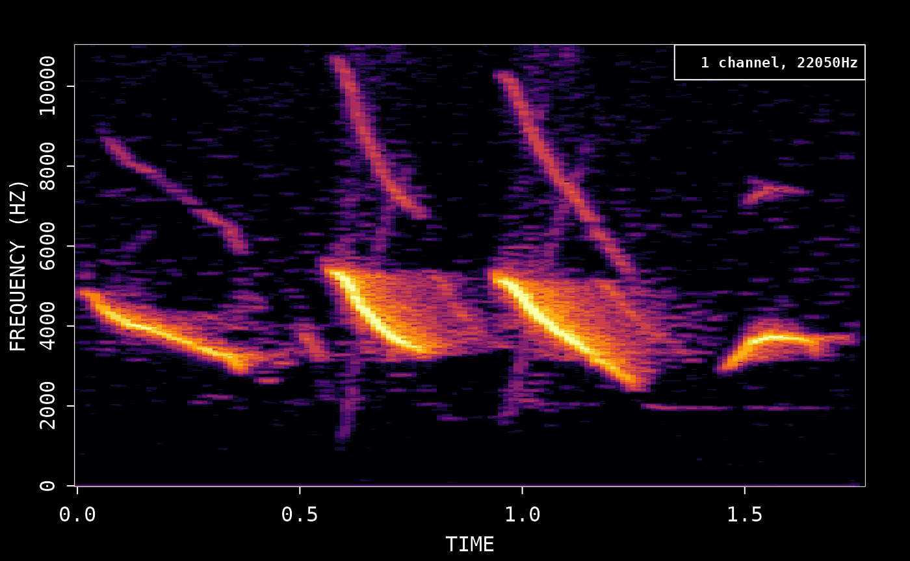
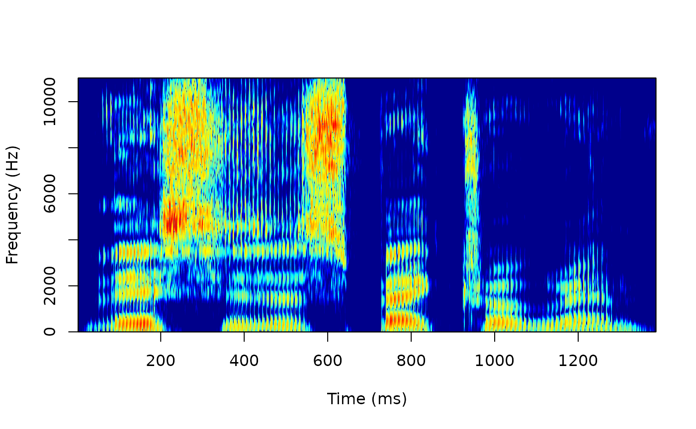
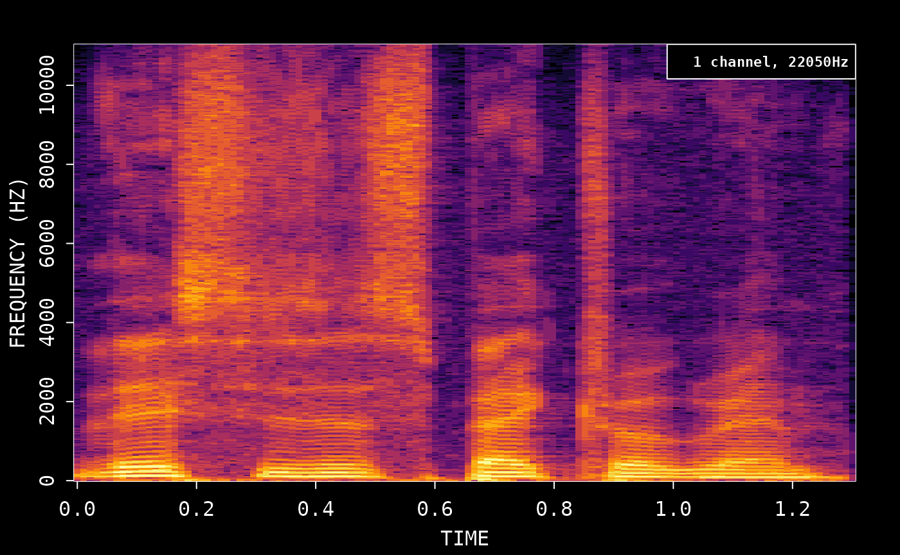

Spectrograms in R using the 'av' package
Jeroen Ooms
2026-08-30
Source:vignettes/articles/spectrograms.Rmd
spectrograms.RmdCalculate the frequency data and plot the spectrogram:
# Demo sound included with av
wonderland <- system.file('samples/Synapsis-Wonderland.mp3', package='av')
# Read first 5 sec of demo
fft_data <- read_audio_fft(wonderland, end_time = 5.0)
plot(fft_data)
You can turn off dark mode to use the default R colors:
plot(fft_data, dark = FALSE)
Spectrogram video
You can also create a spectrogram video like this:
# Create new audio file with first 5 sec
av_audio_convert(wonderland, 'short.mp3', total_time = 5)
#> [1] "short.mp3"
av_spectrogram_video('short.mp3', output = 'spectrogram.mp4', width = 1280, height = 720, res = 144)Compare with tuneR/signal
For comparison, we show how the same thing can be achieved with the
tuneR package:
# Read wav with tuneR
data <- tuneR::readMP3('short.mp3')
# demean to remove DC offset
snd <- data@left - mean(data@left)We then use the signal package to calculate the spectrogram with similar parameters as av:
# create spectrogram
spec <- signal::specgram(x = snd, n = 1024, Fs = data@samp.rate, overlap = 1024 * 0.75)
# normalize and rescale to dB
P <- abs(spec$S)
P <- P/max(P)
out <- pmax(1e-6, P)
dim(out) <- dim(P)
out <- log10(out) / log10(1e-6)
# plot spectrogram
image(x = spec$t, y = spec$f, z = t(out), ylab = 'Freq [Hz]', xlab = 'Time [s]', useRaster=TRUE)
Compare with seewave
Compare spectrograms using the tico audio sample
included with the seewave package:
library(seewave)
library(ggplot2)
data(tico)
ggspectro(tico, ovlp = 50) + geom_tile(aes(fill = amplitude)) + stat_contour()
#> Warning: `aes_string()` was deprecated in ggplot2 3.0.0.
#> ℹ Please use tidy evaluation idioms with `aes()`.
#> ℹ See also `vignette("ggplot2-in-packages")` for more information.
#> ℹ The deprecated feature was likely used in the seewave package.
#> Please report the issue to the authors.
#> This warning is displayed once per session.
#> Call `lifecycle::last_lifecycle_warnings()` to see where this warning was
#> generated.
To use av, we first save the wav file and then create spectrogram:
# First export wav file
savewav(tico, filename = 'tico.wav')
plot(read_audio_fft('tico.wav'))
Compare with phonTools
Use the audio sample included with phonTools:
library(phonTools)
#>
#> Attaching package: 'phonTools'
#> The following object is masked from 'package:seewave':
#>
#> preemphasis
data(sound)
spectrogram(sound, maxfreq = sound$fs/2)
Save the wav file and then create spectrogram. We match the default window function from phonTools:
phonTools::writesound(sound, 'sound.wav')
plot(read_audio_fft('sound.wav', window = phonTools::windowfunc(1024, 'kaiser')))